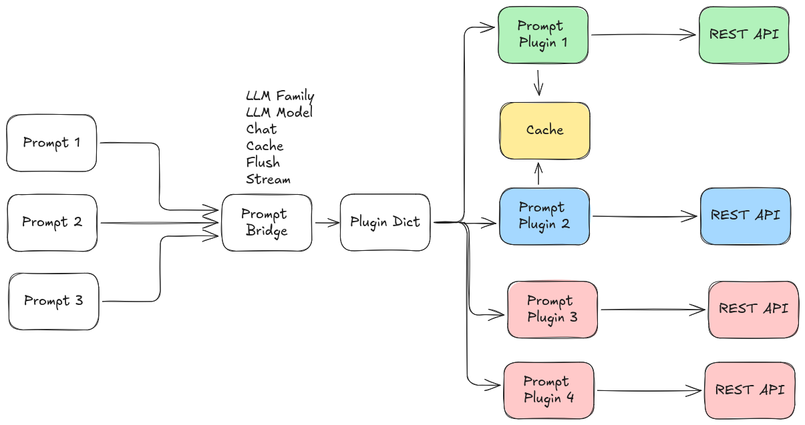

The main service interface for sending prompts and receiving responses is prompt/prompt, using the Prompt.srv definition. prompt_bridge can load multiple prompt providers concurrently and dispatch each request by model_family.

Prompt Interface
Service Definition
string uuid
prompt_msgs/Prompt prompt
---
string uuid
prompt_msgs/PromptResponse response
Request Fields
| Field | Type | Description |
uuid | string | (Optional) Conversation/session ID. Use empty string for new prompt/session. |
prompt | Prompt | The prompt message and options. |
Prompt.msg Fields
| Field | Type | Description |
prompt | string | The prompt text to send. |
use_cache | bool | Whether to cache this prompt (for multi-turn or multi-input). |
flush_cache | bool | Whether to flush the cache and process all cached prompts. |
use_chat_mode | bool | Enable chat/conversational mode (tracks dialogue history). |
model_family | string | Which model family/provider to use (e.g., openai, ollama). |
options | ModelOption[] | Additional model-specific options (e.g., temperature, model name). |
ModelOption.msg Fields
| Field | Type | Description |
key | string | Option key |
value | string | Option value |
type | string | Type hint. The message constants currently define str, bool, int, and real. |
Response Fields
PromptResponse.msg Fields
| Field | Type | Description |
response | string | The generated response text. |
buffered | bool | True if the response is buffered (not final, e.g., when caching). |
success | bool | True if the prompt was processed successfully. |
accuracy | float64 | (Optional) Accuracy metric (if provided by model). |
confidence | float64 | (Optional) Confidence metric. |
risk | float64 | (Optional) Risk metric. |
How to Use the Service
1. Single prompt (stateless)
- Set
uuid to empty string.
- Set
use_cache and use_chat_mode to false in the prompt.
- The response is processed immediately.
- The returned
uuid is empty.
2. Chat mode (multi-turn conversation)
- Set
use_chat_mode to true in the prompt.
- For a new conversation, set
uuid to empty string. The response will include a new uuid for the session.
- For follow-up prompts, set
uuid to the previous response's uuid to continue the conversation.
- When
use_cache is false, each request is sent immediately and both user and assistant turns are appended to the stored conversation.
3. Prompt caching
- In chat mode,
use_cache=true and flush_cache=false buffers the prompt and returns response.buffered=true with a uuid.
- In chat mode,
use_cache=true and flush_cache=true sends the current prompt together with the stored conversation and returns the same uuid.
- In non-chat mode,
use_cache=true and flush_cache=false aggregates user text under a generated uuid.
- In non-chat mode,
use_cache=true and flush_cache=true processes the aggregated cache and intentionally clears the returned uuid because the request is treated as a one-shot prompt after flush.
4. Model selection and options
- Set
model_family to select the provider/plugin (e.g., openai, ollama).
- Use the
options array to specify model-specific parameters (see plugin_parameters.md).
Example Request (YAML)
uuid: ""
prompt:
prompt: "What is the capital of France?"
use_cache: false
flush_cache: false
use_chat_mode: false
model_family: "openai"
options:
- key: model
value: gpt-5
type: str
Extending
To add a new Online Prompt provider, implement a plugin inheriting from prompt::PromptBaseClass and register it. Add its configuration to your YAML file and list it in prompt_family_names and prompt_family_plugins.
Notes
- The service is designed to support both stateless and conversational (chat) interactions.
- Use the
uuid field to manage sessions for chat or caching.
response.buffered is set by prompt_bridge to indicate whether the request was buffered instead of sent to the provider.- New chat conversations always receive a generated
uuid, even when the first request is processed immediately.